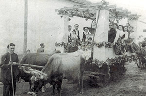
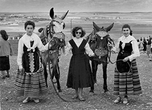
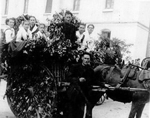

San Isidro Labrador en los años 40 y 50Autora: Yolanda Gallego MonederoTengo que agradecer, de antemano, a las personas mayores que han dedicado su tiempo a contarme cómo celebraban ellos la romería de San Isidro Labrador allá por los años 40 y 50. De tantas y tantas cosas que me han contado, anécdotas incluidas, aquí quiero dejar plasmadas algunas de ellas. Seguro que muchos alcazareños de las quintas del 50 hasta el 60, van a recordar gratos momentos leyendo este artículo. No tenía la suerte el Santo, de subir al cerro en un remolque, ni mucho menos. Cuando se empezó a celebrar su romería, era subida la peana con el santo en un carro tirado por bueyes, o a hombros de los mismos miembros de la hermandad. Los bueyes se cambiaron por mulas años después. Aquello no cambió hasta los años 70, cuando aparecieron los primeros tractores a los que se podía anexar un remolque donde se subía al Santo. Por los años cuarenta, la romería de San Isidro suponía desde días antes, una fiesta que se preparaba con mucha ilusión. La noche antes, se disfrutaba de la verbena popular y se tiraban cohetes. Los romeros preparaban sus carros, y el mismo día de la romería, bien temprano, se decoraban con ramas de olivo y pámpanas, así como flores silvestres y claveles y rosas; las mulas llevaban también las colleras y las cabezadas adornadas con madroños. Esta tradición se conserva hasta nuestros días. El traje típico manchego, refajo, mandil, faltriquera, pololos, calcetines de hilo, camisa blanca, chaleco negro y pañoleta, era lucido tanto por las mozas, como por las no tan mozas. Los hombres, muchachos y niños vestían con pantalón de pana, camisa blanca o blusón, chaleco y fajín. Pañuelos atados a la cabeza y sombreros de paja, así como las alpargatas de esparto atadas con cintas rojas o negras, y las albarcas de cuero, daban el toque final a la vestimenta propia de los labradores que ese día glorificaban al santo. El recorrido de la romería era el mismo que en nuestros días, pues partía de la Iglesia de San Francisco, subía por la Calle Emilio Castelar hasta la esquina del Cristo, y ahí giraba a la derecha, bajando de nuevo, hasta llegar al camino que lleva el nombre de nuestro santo, hasta el cerro. Pasaba por la Academia Cervantes, que para los que no se acuerden o no la hayan conocido, estaba situada en la calle San Francisco, junto a la misma iglesia, y por el Convento de Santa Clara, que actualmente es hotel. En el cerro, se reunían los grupos de amigos y las familias. Allí se prep araban buenos calderos de comida típica manchega. Gachas con tocino, peroles de Carne a la pastora, pipirranas y chorizos a la brasa, y se acompañaba todo ello con un buen vino manchego, que hacía las delicias de grandes y algunos pequeños. Por ello, la bajada del cerro de los romeros, era un poco más costosa y lenta que la subida, a la vez que los recuerdos se divagaban. Las mozas se lo pasaban en grande también. Bailaban jotas manchegas y rondeñas en la puerta de la ermita, sin la premura de llegar tarde a casa, pues la fiesta se hacía desde por la mañana y a plena luz del día. Se tocaban guitarras, laúdes, bandurrias, panderetas… ¡Seguro que más de una, este día encontró novio! También en el cerro, los comerciantes ponían puestecitos con sacas de frutos secos, tales como pistachos, almendras, cacahuetes, avellanas, y berenjenas aliñadas. Aprovechando la romería, los fotógrafos también hacían “su agosto”, pues muchos eran los que querían tener un recuerdo de este día. Siempre había al menos, dos o tres fotógrafos de la localidad. ¿Quién no se acuerda de “Pitos”? Gracias a ellos, hoy contamos con recuerdos como los que podéis ver en este artículo. Había tiempo para todo, y era indispensable la visita del Santo en la ermita. Caída la tarde, se bajaba el santo y detrás bajaban los romeros más remolones.
Otro año más, tocaba día de resaca después de un magnífico día de romería festejando al patrono de labradores y ganaderos de Alcázar de San Juan, que aún por los años cuarenta y cincuenta, eran numerosísimos en nuestra localidad. |
 Revista San Isidro 2015  Revista San Isidro 2015 |
BREVE HISTORIA AGRÍCOLA Y GANADERA (2ª Parte)
En el Priorato de San Juan se tenía costumbre de prestar a los agricultores un tercio de los diezmos para la siembra.
En el Libro de Cuentas 1612-1628 folio 90 nos encontramos la siguiente reseña:
“Mas doce reales que pagó a Diego García de Siruela, vecino desta villa, ...
En el Priorato de San Juan se tenía costumbre de prestar a los agricultores un tercio de los diezmos para la siembra.
En el Libro de Cuentas 1612-1628 folio 90 nos encontramos la siguiente reseña:
“Mas doce reales que pagó a Diego García de Siruela, vecino desta villa, ...

EL HISTORIAL CAMPESINO
Fácil es señor doctor,
decir no bebas más vino
y que difícil que es
para el que nació campesino.
Yo que desde muy pequeño
dediqué mi vida entera
y en darle puse mi empeño,
rango, prestigio y solera..
Fácil es señor doctor,
decir no bebas más vino
y que difícil que es
para el que nació campesino.
Yo que desde muy pequeño
dediqué mi vida entera
y en darle puse mi empeño,
rango, prestigio y solera..
ALGUNOS MILAGROS DE SAN ISIDRO
No todos sabrán de la gran cantidad de milagros que se le atribuyen a San Isidro Labrador, muchos de ellos, post mortem. Cuatrocientos treinta y ocho milagros en total, de los cuales vamos a contar aquí los más conocidos.
No todos sabrán de la gran cantidad de milagros que se le atribuyen a San Isidro Labrador, muchos de ellos, post mortem. Cuatrocientos treinta y ocho milagros en total, de los cuales vamos a contar aquí los más conocidos.
SOLAMENTE HACE 50 AÑOS ...
Tuvo lugar una catástrofe climatológica en toda la zona de La Mancha. Un gran frente frío cruzó toda la Península dejando fuertes heladas y copiosas nevadas que hizo que durante varios días la nieve se quedara congelada sobre todos los cultivos de la zona.
En esos días, concretamente durante los días del 19 al 22 de Febrero de 1.965 ...
Tuvo lugar una catástrofe climatológica en toda la zona de La Mancha. Un gran frente frío cruzó toda la Península dejando fuertes heladas y copiosas nevadas que hizo que durante varios días la nieve se quedara congelada sobre todos los cultivos de la zona.
En esos días, concretamente durante los días del 19 al 22 de Febrero de 1.965 ...
| Teléfono: 654 53 82 29 (Jesús) Casa Parroquial de la Iglesia de San Francisco Plaza de San Francisco, s/n 13600 - Alcázar de San Juan (Ciudad Real) |
Síguenos en |